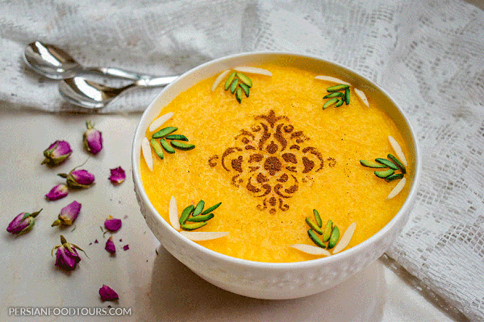

Shole Zard

Description
Persian saffron rice pudding or Shole Zard is a very popular meal in Iranian cuisine. It is commonly served as dessert or an evening meal but you can also have it as a main course if you have a sweet tooth.
Ingredients
- 1 cup rice
- 6 cups water
- 2 cups sugar
- 50 grams butter
- 1/2 cup Rosewater
- 1/4 cup bloomed saffron
- 1/4 cup sliced almond optional
- 1/4 tsp powdered cardamom optional
for garnish
- powdered cinnamon
- sliced almonds and pistachios
Steps
- Let the uncooked rice soak in water for several hours. Then put it on medium heat and let it bake until it gets mushy.
- Add sugar and keep on medium heat.
- Add bloomed saffron and butter and keep it on the heat. Stir frequently so the bottom parts won't burn. You can add cardamom at this step if you desire.
- At this time you can add water if the meal is very thick or you can let the excess water vaporize if it's too watery.
- When the thickness is as you desire, add rosewater and keep it on heat for a few more minutes. You can also add sliced soaked almonds at this time.
- remove from heat. pour into your serving dish and garnish with cinnamon and nuts.
return to main page